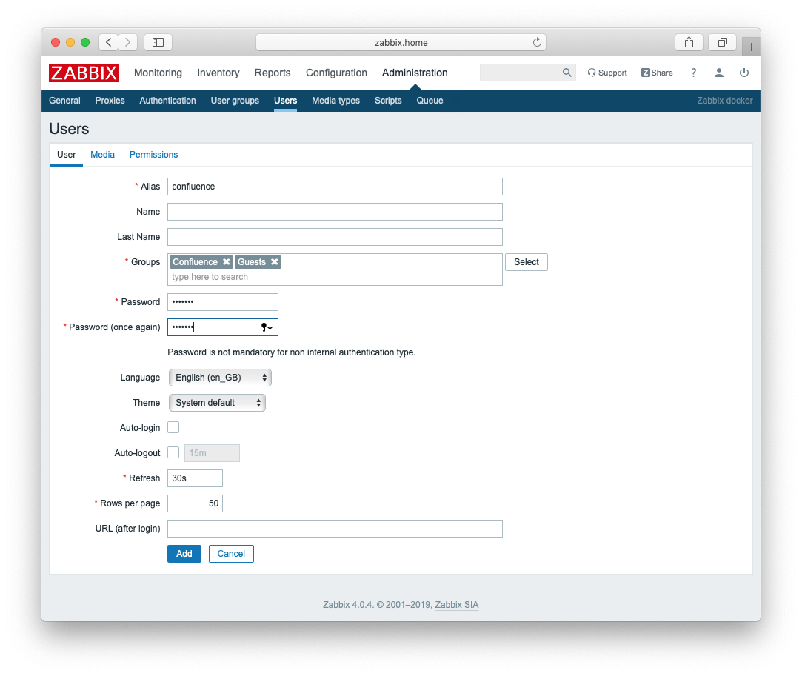
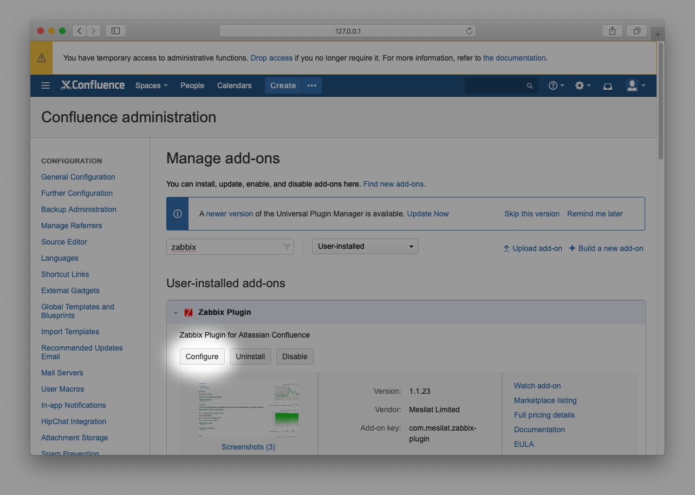
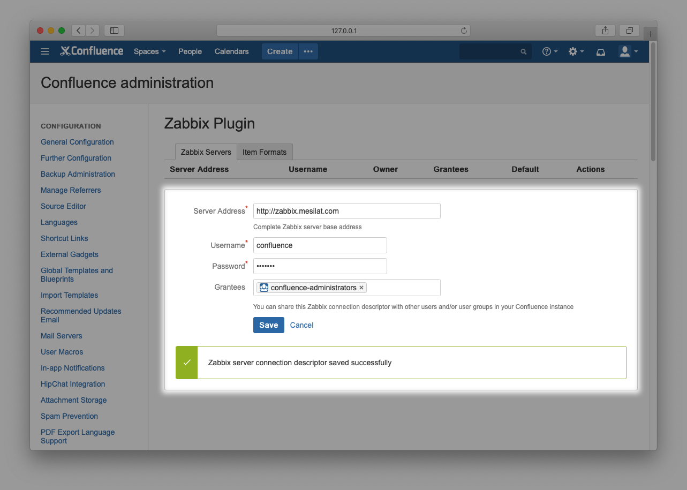
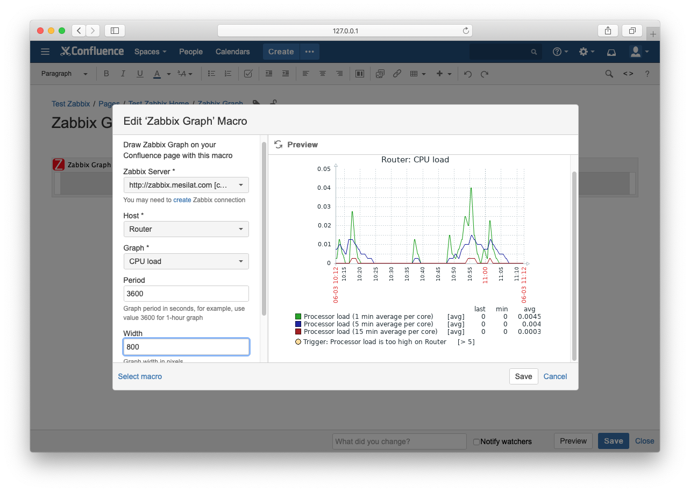
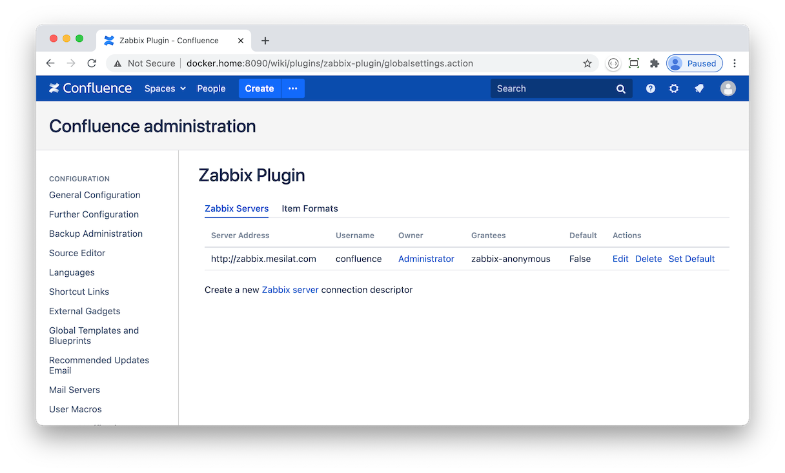
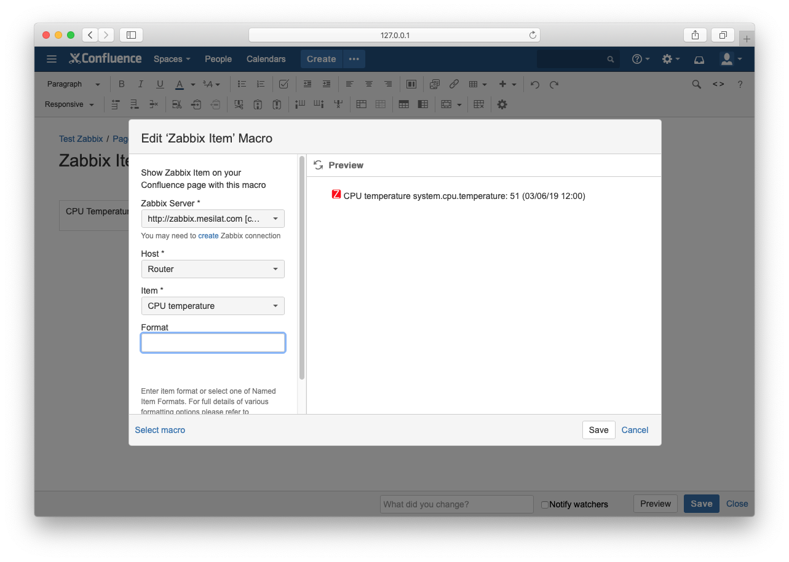
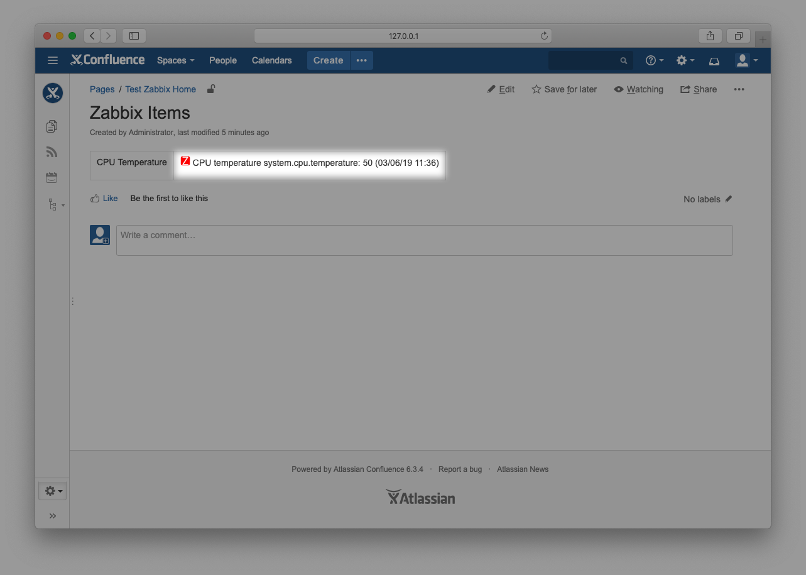
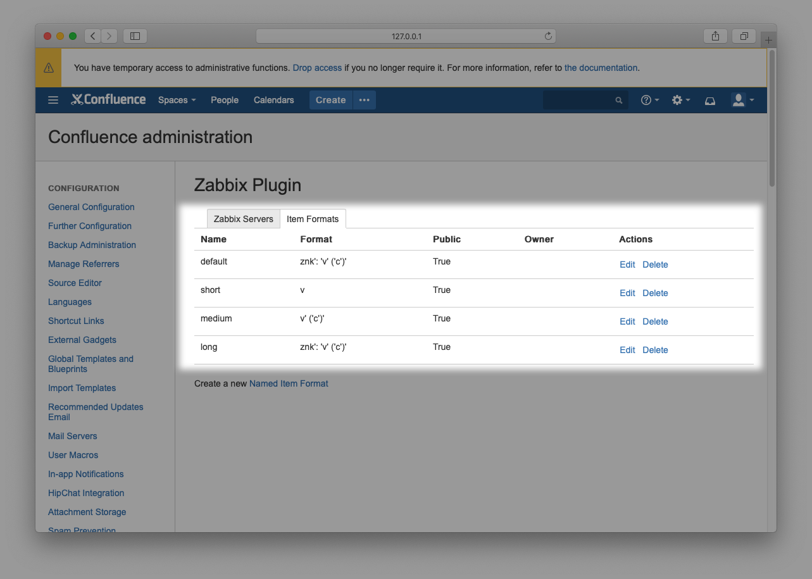
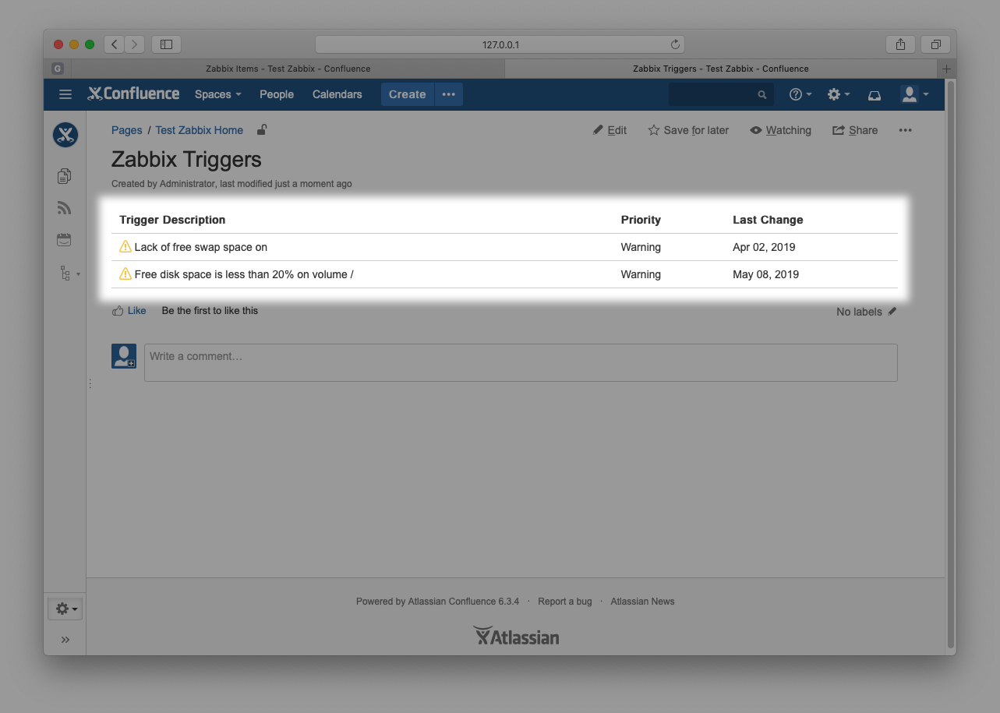

Zabbix Plugin
There are many of us sysadmins out there who use Confluence as primary source of information about managed systems’ hardware and software – the type of information that would likely contain installation instructions, configuration files, performance reports and other valuable bits and pieces of information. This is usually accompanied by network monitoring tools such as Zabbix.
This plugin is used to add Zabbix Graphs and Zabbix Maps to your Confluence pages to supplement configuration details and reports with online graphical information. It is also possible to import text information such as Zabbix Items and Zabbix Triggers.
Setup
Before using the plugin you have to provide Zabbix server connection details to your Confluence instance.
Using Zabbix administration pages, create “confluence” account in “confluence” user group and grant the group read-only permissions to whatever hosts you choose to be available in your Confluence instance.

Confluence user
In Confluence, install the plugin and navigate to configuration screen by pressing Configure button.

Configure button
Create a new Zabbix server connection by providing Zabbix server address and credentials.

Configuration screen
You may share your connection descriptor with other Confluence users by selecting a user or a user group in Grantees field.
You may also set the connection as Default. This option is maintained for compatibility only.
Zabbix Graph macro
Drop Zabbix Graph macro on a page and specify Server, Host and Graph parameters. You may also set the Period (in seconds), Width and Height of the graph in pixels.

Graph Macro
Save the page and you will see the selected Zabbix graph:

Graph Macro
You can put as many Zabbix graphs on a Confluence page as you need.
Anonymous user access
You may wish to make your Confluence pages public as described in Confluence server documentation. However the plugin will not share Zabbix data with unauthenticated users. Starting with version 1.1.35 of the plugin you can setup anonymous user access to Zabbix Graph Macro as follows:
create a Confluence user zabbix-anonymous
navigate to the plugin configuration page (use the plugin Configure button) and edit your Zabbix server grantees to include the user zabbix-anonymous.
as a final step – disable zabbix-anonymous user
You should end up with something like

Zabbix Item macro
In Zabbix an ‘item’ is an individual metric that gathers data from a monitored host.
Drop Zabbix Item macro on page and specify Server, Host and Item parameters.

Item Macro
Save the page and you will see the item details:

Item Macro
It is possible to modify the item format. Zabbix Plugin comes with three predefined named formats:
default or long: icon, item name and key, value, units and value date/time
medium: item value and date/time
short: item value only
You can create custom named formats using the plugin configuration page:

Item Formats
Item format components are defined as follows:
v: latest item value
c: latest item clock (date and time)
n: item name
k: item key
d: item description (as defined by Zabbix server)
u: item units
i: item id (as defined by Zabbix server)
z: item icon (red letter “Z”)
You may also include arbitrary text in single or double quotes.
Zabbix Triggers macro
In Zabbix a ‘trigger’ is defined as a logical expression and represents system state. Typically when a trigger signals a problem an action is required from a system administrator.
To list active triggers for a host drop Zabbix Triggers macro on your page and specify Server and Host parameters.

Triggers Macro
Save the page and you will see active triggers for the host:

Triggers Macro
In case there are no active triggers to display:

Triggers Macro
Zabbix Map macro
In Zabbix you can create a ‘map’ with one or more hosts.
To get your Zabbix map in Confluence drop Zabbix Map macro on page and specify the Server and Map parameters.

Map Macro
Save the page and you will have your Zabbix map on it.
Host Selector macro
Suppose you have a report page template that you would like to apply to multiple Zabbix hosts. Instead of duplicating a page and updating host details in each and every graph / item on the page you can use a Host Selector macro to share server / host parameter values with other zabbix- macros.
Drop Host Selector macro on a page and specify the Server and Host parameters.

Host Selector Macro
When you save the page the macro will print the selected Zabbix host name:

Host Selector Macro
Now you can use Zabbix Graph or Zabbix Item macros without specifying a server or host:

Host Selector Macro
This plugin is available for download from Atlassian Marketplace.
The plugin can be used in Atlassian Data Center environment.
To report a bug please use the issue tracker.